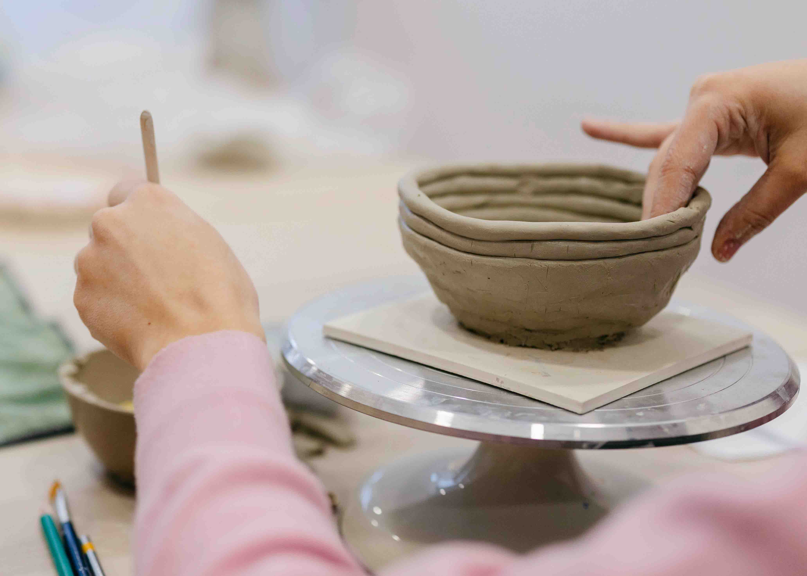

À procura de uma atividade de teambuilding criativa e marcante? O nosso workshop de teambuilding de olaria é mesmo para si! Longe da rotina do trabalho diário, a equipa cria algo com as próprias mãos, fortalece o espírito de grupo e leva recordações que ficam.
Todos os participantes trabalham com argila verdadeira, usando diferentes técnicas de modelagem manual consoante o que querem criar. Começamos com uma breve introdução aos conceitos básicos, e depois é meter as mãos na massa. Os nossos instrutores estão presentes durante toda a sessão — respondendo a perguntas, demonstrando passos e ajudando quando necessário — dando ao mesmo tempo espaço para cada um explorar e criar a sua peça.
Cada pessoa sai com a sua própria peça, que vidramos e cozemos no nosso forno. As cerâmicas acabadas ficam prontas para levantar cerca de quatro semanas depois.

Rola a argila em rolos compridos e constrói as paredes camada a camada. Uma técnica meditativa e intuitiva, perfeita para taças e vasos.

Estende folhas planas de argila e dobra, corta e une-as em formas. Ótima para pratos, azulejos e formas angulares.

A técnica mais direta: belisca e molda uma bola de argila com os dedos. A forma mais rápida de sentir a argila nas mãos.
Sugerimos a técnica certa com base no que gostariam de criar.
Os workshops de grupo são reservados mediante pedido para que possamos planear a configuração certa para o tamanho e agenda do vosso grupo.
Envie-nos uma mensagem com o tamanho do grupo, a data preferida e quaisquer questões. Confirmamos disponibilidade e enviamos um orçamento.
Reservamos a data com um depósito. O restante valor é liquidado antes da sessão.
Chegue ao estúdio, vista o avental e deixe os nossos instrutores tratar do resto. Todos os materiais estão à espera.
As peças são vidradas e cozidas no nosso forno. Prontas para levantar cerca de três a quatro semanas após a sessão.